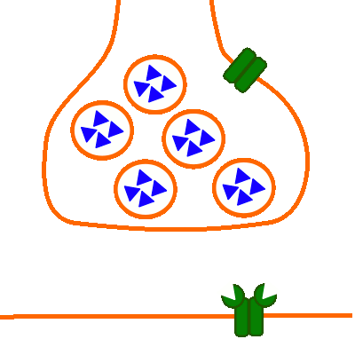

Erregungsübertragung (chemisch): Bau der Synapse
Neuro-Muskuläre Synapse

Abb. 1: Bau der Neuromuskulären Synapse
- Präsynaptisch (oben):
Präsynaptische Membran des Axons und des daran anschließend des Axonendknotens;
Vesikel-Membran;
Spannungsabhängiger Calciumioneniumkanal (Kanalprotein);
Acetylcholin als Neurotransmitter (dreieckig, hier in Vesikeln gespeichert);
- Postsynaptisch (unten):
Postsynaptische Membran der Muskelzelle (die sich in dem neben der Synapse anschließenden Bereich befindlichen spannungsabhängigen Natriumionenkanäle sind nicht dargestellt);
Transmitterabhängiger Natriumionenkanal (Kanalprotein) mit den Rezeptorstellen für den Neurotransmitter Acetylcholin;
Externe Links
Motorische Endplatte